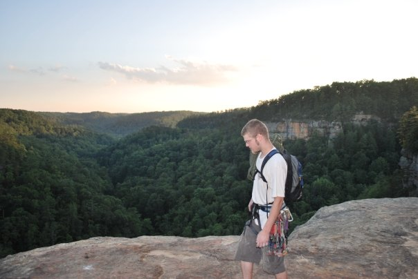

I have an insatiable thirst for knowledge and love to learn. I enjoy working with groups because it allows greater opportunites to learn from the experience of others.
Musician, Sound Engineer, Chef, Bartender, Automotive Technician
Cooking, Fixing things, Video Games